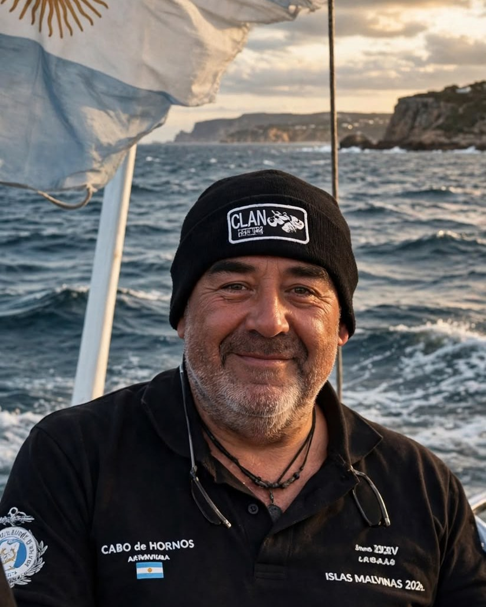

Sobre la carta
El recorrido completo
La cartografía permite seguir el recorrido día por día. Por etapas, las millas navegadas fueron:
| Rumbo al sur | 994 MN |
|---|---|
| Malvinas | 1.087 MN |
| Regreso | 1.384 MN |
| Total | 3.465 MN |
Velero Cabo de Hornos · travesía a Malvinas 2024
«El agua salada lo cura todo, ya sea en sus formas de sudor, de lágrimas o en el mar». Una travesía en velero desde Buenos Aires hasta Malvinas para rendir homenaje al aviso ARA «Alférez Sobral» y navegar las aguas que había navegado el transporte ARA «Cabo de Hornos».

Lágrimas · 22 de enero de 2024
Frente a la costa norte de las islas, la tripulación del Cabo de Hornos rindió honores al aviso ARA «Alférez Sobral», a su comandante, el capitán de corbeta Sergio Raúl Gómez Roca, y a los hombres que cayeron con él en mayo de 1982. Cuando la corona flotaba por la popa, dos toninas overas saltaron, una a cada lado.
Un mismo nombre, dos barcos
El año de la guerra unió al Liceo Naval, al transporte «Cabo de Hornos» y al «Sobral». Cuarenta y dos años después, el velero cerró el círculo.
Sudor, lágrimas y mar
Como en la charla «Agua salada», el relato va de los antecedentes al regreso.
Video
Navegando hacia las islas, la mañana del 22 de enero.
Sobre la carta
Calculado con las posiciones que el inReach del velero registró durante toda la travesía.
| Zarpada | Tramo | Millas | Tiempo | Media |
|---|---|---|---|---|
| 3 ene | Centro Naval Núñez → Mar del Plata | 281 MN | 2 d 2 h | 5,6 nudos |
| 6 ene | Mar del Plata → Base Naval Puerto Belgrano | 246 MN | 1 d 20 h | 5,7 nudos |
| 11 ene | Base Naval Puerto Belgrano → Bahía Cracker, golfo Nuevo | 308 MN | 2 d 2 h | 6,2 nudos |
| 15 ene | Bahía Cracker, golfo Nuevo → Camarones | 154 MN | 1 d 2 h | 6,0 nudos |
| 19 ene | Camarones → Puerto Argentino | 576 MN | 3 d 22 h | 6,2 nudos |
| 25 ene | Puerto Argentino → Garden Point | 91 MN | 23 h | 4,0 nudos |
| 28 ene | Garden Point → Puerto San Julián | 412 MN | 3 d 8 h | 5,2 nudos |
| 7 feb | Puerto San Julián → Caleta Hornos | 306 MN | 2 d 10 h | 5,3 nudos |
| 12 feb | Caleta Hornos → Puerto Pirámides | 233 MN | 2 d 5 h | 4,4 nudos |
| 17 feb | Puerto Pirámides → Base Naval Puerto Belgrano | 318 MN | 2 d 6 h | 5,9 nudos |
| 21 feb | Base Naval Puerto Belgrano → Centro Naval Núñez | 515 MN | 3 d 13 h | 6,1 nudos |
Sobre la carta
La cartografía permite seguir el recorrido día por día. Por etapas, las millas navegadas fueron:
| Rumbo al sur | 994 MN |
|---|---|
| Malvinas | 1.087 MN |
| Regreso | 1.384 MN |
| Total | 3.465 MN |